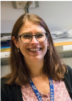
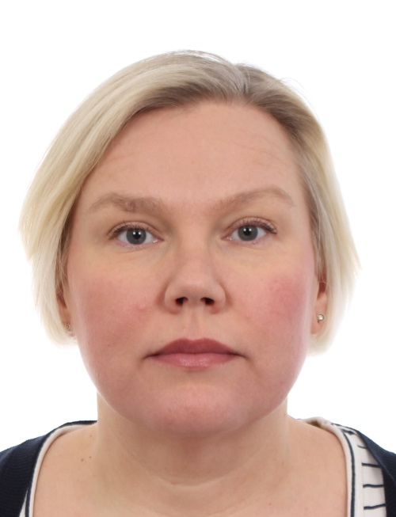
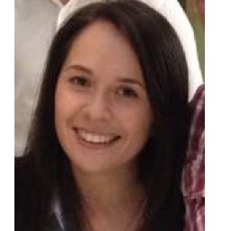

<div class="jumbotron jumbotron-fluid">
	<h2>Contact information</h2>
	<hr class="my-4">
</div>

<div style="display: flex; justify-content: space-evenly; flex-wrap: wrap;">
	<mat-card>
		<mat-card-title>Dr. Zoë Fisher</mat-card-title>
		<mat-card-subtitle>
			Protein crystallization & biodeuteration
		</mat-card-subtitle>
		
		<mat-card-content>
			<mat-list>
				<mat-list-item><a href="mailto:Zoe.Fisher@esss.se" class="spamspan">Zoe.Fisher@esss.se</a>
				</mat-list-item>
				<mat-list-item><a href="tel:%2B46468883250">+46 46 888 32 50</a></mat-list-item>
				<mat-list-item><a href="tel:%2B46721792250">+46 72 179 22 50</a></mat-list-item>
			</mat-list>
		</mat-card-content>
	</mat-card>
	<mat-card>
		<mat-card-title>Dr. Hanna Wacklin-Knecht
		</mat-card-title>
		<mat-card-subtitle>Chemical & lipid/membranes</mat-card-subtitle>
		
		<mat-list>
			<mat-list-item>
				<a href="mailto:hanna.wacklin@esss.se">hanna.wacklin@esss.se</a>
			</mat-list-item>
			<mat-list-item>
				<a href="tel:%2B46468883044">+46 46 888 30 44</a>
			</mat-list-item>
			<mat-list-item>
				<a href="tel:%2B46721792044">+46 72 179 20 44</a>
			</mat-list-item>
		</mat-list>
	</mat-card>
	<mat-card>
		<mat-card-title>Dr. Anna Leung
		</mat-card-title>
		<mat-card-subtitle>Chemical deuteration & organic synthesis</mat-card-subtitle>
		
		<mat-list>
			<mat-list-item>
				<a href="mailto:Anna.Leung@esss.se" class="spamspan">Anna.Leung@esss.se</a></mat-list-item>
			<mat-list-item>
				<a href="tel:%2B46468883427">+46 46 888 34 27</a>
			</mat-list-item>
			<mat-list-item>
				<a href="tel:%2B46721792427">+46 72 179 24 27</a>
			</mat-list-item>
		</mat-list>
	</mat-card>
</div>